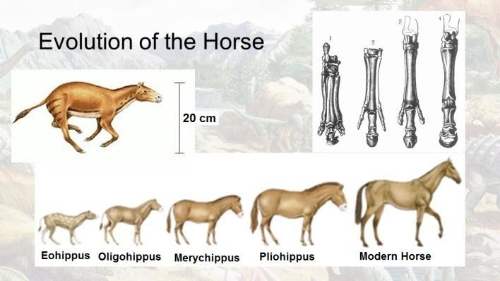
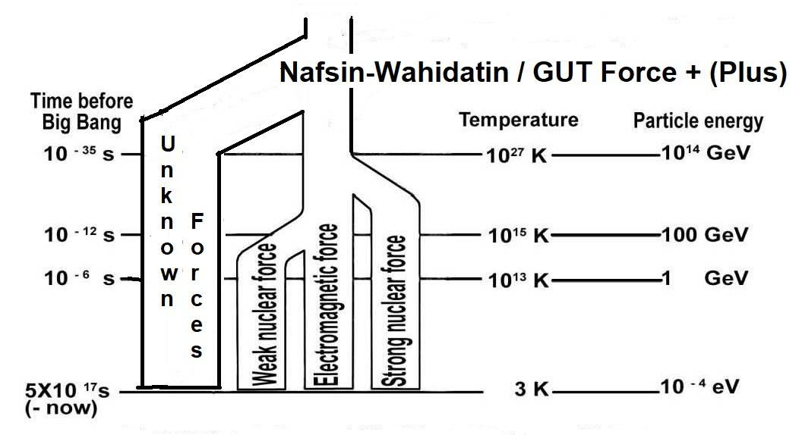

―Glory to God Who created all things that the earth produces as well as their own kind and things of which they have no knowledge from Pairs (double helix DNA molecule)‖ [Al Quran 36:36]
"আল্লাহর মহিমা যিনি পৃথিবী থেকে যা কিছু উৎপন্ন করে এবং সেইসাথে তাদের নিজস্ব ধরণের এবং যেগুলির সম্পর্কে তাদের কোন জ্ঞান নেই (ডাবল হেলিক্স ডিএনএ অণু) সৃষ্টি করেছেন।" [আল কুরআন 36:36]
Thus, the genomes of all living creatures have the same chemical composition, but their codes differ. One set of genetic instructions produces a plant, while another produces a camel.
সুতরাং, সমস্ত জীবন্ত প্রাণীর জিনোমের রাসায়নিক গঠন একই, তবে তাদের কোডগুলি আলাদা। জেনেটিক নির্দেশাবলীর একটি সেট একটি উদ্ভিদ তৈরি করে, অন্যটি একটি উট তৈরি করে।
"That has created Pairs (double helix DNA molecules) in all things, and has made for you ships (plants for wooden ship) and cattle on which ye ride‖ [Al Quran 43:12]
"এটি সমস্ত জিনিসের মধ্যে জোড়া (ডাবল হেলিক্স ডিএনএ অণু) তৈরি করেছে এবং তোমাদের জন্য জাহাজ (কাঠের জাহাজের জন্য গাছপালা) এবং গবাদি পশু তৈরি করেছে যার উপর তোমরা চড়ো" [আল কুরআন 43:12]
It sound easy, but a new form of life needs new code in the form of information inscribed in the spine of DNA molecule. Such monumentally complex code cannot modify itself at its own. There are clearly defined periods when the modifications took place. The Cambrian Explosion was an explosion of biological form, but it was an explosion of biological information as well. And we know what it takes to generate information in a computer. The simplest DNA structure that should be able to re- produce another similar creature is so complex that it negates the probability of accidental creation—the probability is 1 in 10340,000,000. Thus, evolution is not merely a natural process driven by survival of the fittest; rather, a Super Intelligent Creator guided it forward by modifying genome codes.
এটি সহজ শোনাচ্ছে, কিন্তু জীবনের একটি নতুন রূপের জন্য ডিএনএ অণুর মেরুদণ্ডে খোদাই করা তথ্যের আকারে নতুন কোডের প্রয়োজন। এই ধরনের মনুমেন্টালি জটিল কোড নিজেই নিজেকে পরিবর্তন করতে পারে না। যখন পরিবর্তনগুলি হয়েছিল তখন স্পষ্টভাবে সংজ্ঞায়িত সময় রয়েছে৷ ক্যামব্রিয়ান বিস্ফোরণ ছিল জৈবিক আকারের একটি বিস্ফোরণ, তবে এটি জৈবিক তথ্যেরও একটি বিস্ফোরণ ছিল। এবং আমরা জানি কম্পিউটারে তথ্য তৈরি করতে কি কি লাগে। সহজতম ডিএনএ কাঠামো যা অন্য একটি অনুরূপ প্রাণীকে পুনরায় তৈরি করতে সক্ষম হওয়া উচিত তা এতই জটিল যে এটি দুর্ঘটনাজনিত সৃষ্টির সম্ভাবনাকে অস্বীকার করে - সম্ভাবনা 10340,000,000 এর মধ্যে 1। সুতরাং, বিবর্তন নিছক যোগ্যতমের বেঁচে থাকার দ্বারা চালিত একটি প্রাকৃতিক প্রক্রিয়া নয়; বরং, একজন সুপার ইন্টেলিজেন্ট স্রষ্টা জিনোম কোড পরিবর্তন করে এটিকে এগিয়ে নিয়ে গেছেন।
3b. The First Living Creature
3 খ. প্রথম জীবন্ত প্রাণী
Allah has evolved the universe from a tiny state of unity. And He has evolved the giant blue whale from a tiny single-cell creature:
আল্লাহ মহাবিশ্বকে এক ক্ষুদ্র অবস্থা থেকে বিবর্তিত করেছেন। এবং তিনি একটি ক্ষুদ্র এককোষী প্রাণী থেকে বিশালাকার নীল তিমি উদ্ভাবন করেছেন:
"Do not the unbelievers see that the ―Skies and Lands‖ (Universe) were joined together, before We clove them asunder? We made from water every living thing. Will they not then believe?" [Al Quran 21:30]
"কাফেররা কি দেখে না যে, "আকাশ ও ভূমি" (মহাবিশ্ব) একত্রিত হয়ে গেছে, আমি তাদের বিচ্ছিন্ন করার পূর্বেই? আমি পানি থেকে সৃষ্টি করেছি প্রতিটি জীবন্ত বস্তু। তাহলেও কি তারা বিশ্বাস করবে না?" [আল কুরআন 21:30]
Allah designed the laws and initial configuration of the universe to evolve according to His will. However, this design could not inherently contain the information required to create the genome of the first living creature (a genome is an organism's complete set of DNA, including all its genes). Therefore, the first genome was a special insertion by Allah, and He subsequently modified it through the angels to create higher species.
আল্লাহ তার ইচ্ছা অনুযায়ী বিকশিত হওয়ার জন্য মহাবিশ্বের আইন এবং প্রাথমিক কনফিগারেশন ডিজাইন করেছেন। যাইহোক, এই নকশাটি সহজাতভাবে প্রথম জীবিত প্রাণীর জিনোম তৈরি করার জন্য প্রয়োজনীয় তথ্য ধারণ করতে পারেনি (একটি জিনোম হল একটি জীবের ডিএনএর সম্পূর্ণ সেট, এর সমস্ত জিন সহ)। অতএব, প্রথম জিনোমটি ছিল আল্লাহর দ্বারা একটি বিশেষ সন্নিবেশ, এবং তিনি পরবর্তীতে উচ্চতর প্রজাতি সৃষ্টির জন্য ফেরেশতাদের মাধ্যমে এটিকে সংশোধন করেন।
3c. Reason of Evolution
3 গ. বিবর্তনের কারণ
The Quran does not state that Allah created this vast universe with a single command of 'Be.' Instead, it explains that Allah created the universe in six days, with each 'day' representing a long period of time. Allah chose the most perfect method of creation, which we observe as guided, systematic evolution. After all, one of His names is 'The Evolver'. The evolution was not a matter of survival of the fittest. So far the fossil of an unfit creature is not found. Each was fit for its time and space, and each had the purpose. Finally, the Earth was made good for the arrival of Adam.
কোরানে বলা হয়নি যে আল্লাহ এই বিশাল মহাবিশ্ব সৃষ্টি করেছেন 'হও' এর একক আদেশে। পরিবর্তে, এটি ব্যাখ্যা করে যে আল্লাহ মহাবিশ্বকে ছয় দিনে সৃষ্টি করেছেন, প্রতিটি 'দিন' একটি দীর্ঘ সময়ের প্রতিনিধিত্ব করে। আল্লাহ সৃষ্টির সবচেয়ে নিখুঁত পদ্ধতি বেছে নিয়েছেন, যেটিকে আমরা নির্দেশিত, নিয়মতান্ত্রিক বিবর্তন হিসেবে পালন করি। সর্বোপরি, তার একটি নাম হল 'দ্য ইভলভার'। বিবর্তন যোগ্যতমের বেঁচে থাকার বিষয় ছিল না। এখন পর্যন্ত অযোগ্য প্রাণীর জীবাশ্ম পাওয়া যায়নি। প্রতিটি তার সময় এবং স্থান জন্য উপযুক্ত ছিল, এবং প্রত্যেকের উদ্দেশ্য ছিল. অবশেষে, আদমের আগমনের জন্য পৃথিবীকে সুন্দর করা হয়েছিল।
―The One Who made good everything He created, and He began the creation of man from tinin.‖ [Al Quran 32:7]
"যিনি যা কিছু সৃষ্টি করেছেন তার সবকিছুই ভালো করেছেন এবং তিনি তিনিন থেকে মানুষের সৃষ্টি শুরু করেছেন।" [আল কুরআন 32:7]
[―Tinin‖ (Lute) mentioned in above verse is deliberately discussed in Section-2 of Chapter-23. It is a zygote (represented by a lute).] For example, He created horses but those were only 20 cm high; He made them big by modifying the genome code. Thus, they can carry us. Finally, Allah created Adam separately.
উপরের আয়াতে উল্লিখিত ‘তিনিন’ (লুট) পরিকল্পিতভাবে 23-এর অধ্যায়-2-এ আলোচনা করা হয়েছে। এটি একটি জাইগোট (একটি ল্যুট দ্বারা প্রতিনিধিত্ব করা হয়)।] উদাহরণস্বরূপ, তিনি ঘোড়া তৈরি করেছিলেন কিন্তু সেগুলি মাত্র 20 সেমি উঁচু ছিল; তিনি জিনোম কোড পরিবর্তন করে তাদের বড় করেছেন। এইভাবে, তারা আমাদের বহন করতে পারে। অবশেষে আল্লাহ আদমকে আলাদাভাবে সৃষ্টি করলেন।
FIGURE 24.21: Made good everything He created Allah created the universe and made the Earth suitable for Adam in six long periods of time. Allah is ever living; He was not in a hurry.

চিত্র 24_21 / Figure 24_21
চিত্র 24.21: আল্লাহ যা সৃষ্টি করেছেন সবকিছু ভালো করেছেন এবং ছয়টি দীর্ঘ সময়ের মধ্যে পৃথিবীকে আদমের জন্য উপযোগী করেছেন। আল্লাহ সদা জীবিত; তার তাড়া ছিল না।
চিত্র 24_21 / Figure 24_21
3e. Three Torturous Undertakings of Allah
3ই. আল্লাহর তিনটি অত্যাচারী উদ্যোগ
Allah is the Great Creator, and being a Creator is no easy task. While Allah does not experience fatigue, He does feel hardship. The following verse discusses three creations that were particularly torturous undertakings for Him:
আল্লাহ মহান স্রষ্টা, এবং স্রষ্টা হওয়া সহজ কাজ নয়। যদিও আল্লাহ ক্লান্তি অনুভব করেন না, তিনি কষ্ট অনুভব করেন। নিম্নোক্ত আয়াতে তিনটি সৃষ্টি সম্পর্কে আলোচনা করা হয়েছে যেগুলো তাঁর জন্য বিশেষভাবে কষ্টকর ছিল:
―He created you from a Nafs Single (Nafsin- Wahidatin / GUT Force+), then created favorable Pairs (double helix DNA molecules), and He sent down for you of the cattle eight Pairs; He creates you in the wombs of your mothers—creation after creation—three tortures (on Allah). That Allah is your Lord; for Him is the dominion. There is no god but He. Then how are you turned away?‖ [Al Quran 39:6]
তিনি তোমাদের সৃষ্টি করেছেন একটি নফস একক (নাফসিন-ওয়াহিদাতিন/জিইউটি ফোর্স+) থেকে, তারপর সৃষ্টি করেছেন অনুকূল জোড়া (ডাবল হেলিক্স ডিএনএ অণু), এবং তিনি তোমাদের জন্য গবাদি পশুর আট জোড়া নাযিল করেছেন; তিনি তোমাদেরকে তোমাদের মাতৃগর্ভে সৃষ্টি করেন- সৃষ্টির পর সৃষ্টি- তিনটি নির্যাতন (আল্লাহর উপর)। যে আল্লাহ তোমাদের পালনকর্তা; তাঁর জন্য রাজত্ব। তিনি ছাড়া কোন উপাস্য নেই। তাহলে তোমরা কিভাবে মুখ ফিরিয়ে নিলে?'' [আল কুরআন 39:6]
Above verse is often translated in deviated form, as people do not want to accept that anything could be torturous for Allah. My translation is direct, word-to- word. Three Tortures (Zulumatin Thalathin) on Allah were: 1. Creation from a Nafs Single (Nafsin-Wahidatin / GUT Force +) 2. Creation of Favorable Pair (DNA Double Helix) 3. Creation in Mother‘s Womb The tortures are discussed below. Each of these three was a monumental affair.
উপরের আয়াতটি প্রায়শই বিচ্যুত আকারে অনুবাদ করা হয়, কারণ লোকেরা মেনে নিতে চায় না যে আল্লাহর জন্য কিছু কষ্টকর হতে পারে। আমার অনুবাদ সরাসরি, শব্দ থেকে শব্দ। আল্লাহর উপর তিনটি নির্যাতন (জুলুমাতিন থালাথিন) ছিল: 1. একটি নফস একক থেকে সৃষ্টি (নাফসিন-ওয়াহিদাতিন / জিইউটি ফোর্স +) 2. অনুকূল জুটির সৃষ্টি (ডিএনএ ডাবল হেলিক্স) 3. মাতৃগর্ভে সৃষ্টি নির্যাতনগুলি নীচে আলোচনা করা হয়েছে। এই তিনটির প্রত্যেকটিই ছিল একটি স্মৃতিবিজড়িত ব্যাপার।
3e-I: The First Torture on Allah – Creation from a Nafs Single (Nafsin-Wahidatin / GUT Force +)
3e-I: আল্লাহর উপর প্রথম অত্যাচার - একটি নফস একক থেকে সৃষ্টি (নাফসিন-ওয়াহিদাতিন / GUT ফোর্স +)
We have discussed the soul deliberately in Chapter-1 and in Section-10 of Chapter-6. An elementary soul (ruh) and a force field are the same thing. There are many kinds of elementary souls (force fields / ruhs), known and unknown. Several elementary souls (force fields / ruhs) in combination form a composite soul (nafs) to sustain a system. For example, the nafs (soul) of an atom is a combination of three elementary souls (ruhs) such as Strong Nuclear Force Field (a soul/ruh), Weak Nuclear Force Field (a soul/ruh), and Magnetic Force Field (a soul/ruh). A composite soul is called nafs. I write ―nafses‖ in plural form. The ―nafs‖ too is translated as ―soul‖. The universe was created from a huge nafs (composite soul) provided by Allah. He breathed out this nafs from His own nafs permeating His body in form. The provided nafs has been called Nafsin-Wahidatin (a Nafs Single) in the above verse. The scientific community knows the Nafsin- Wahidatin as ‗GUT Force‘ (Force of Grand Unified Theory). Scientists have discovered four kinds of force fields only. There should be many unknown force fields (elementary souls / ruhs) that produce the fundamental sub-atomic particles and the nafses of living creatures. The unknown force fields should have originated from the same Nafsin-Wahidatin. So, the Nafsin-Wahidatin can be termed as the ―GUT Force + (Plus)‖.
আমরা অধ্যায়-1-এ এবং অধ্যায়-6-এর ধারা-10-এ ইচ্ছাকৃতভাবে আত্মা নিয়ে আলোচনা করেছি। একটি প্রাথমিক আত্মা (রুহ) এবং একটি শক্তি ক্ষেত্র একই জিনিস। অনেক ধরণের প্রাথমিক আত্মা রয়েছে (বল ক্ষেত্র / রুহ), পরিচিত এবং অজানা। একটি সিস্টেমকে টিকিয়ে রাখার জন্য বেশ কিছু প্রাথমিক আত্মা (ফোর্স ফিল্ড/রুহস) একত্রে একটি যৌগিক আত্মা (নফস) গঠন করে। উদাহরণস্বরূপ, একটি পরমাণুর নফস (আত্মা) হল তিনটি প্রাথমিক আত্মার সংমিশ্রণ (রুহ) যেমন শক্তিশালী নিউক্লিয়ার ফোর্স ফিল্ড (একটি আত্মা/রুহ), দুর্বল নিউক্লিয়ার ফোর্স ফিল্ড (একটি আত্মা/রুহ), এবং চৌম্বকীয় শক্তি ক্ষেত্র (একটি আত্মা/রুহ)। যৌগিক আত্মাকে নফস বলা হয়। আমি বহুবচনে ‘নফসেস’ লিখি। "নফস"-কেও "আত্মা" হিসাবে অনুবাদ করা হয়। মহাবিশ্ব সৃষ্টি হয়েছে আল্লাহ প্রদত্ত বিশাল নফস (যৌগিক আত্মা) থেকে। তিনি এই নফসটি তাঁর নিজের নফস থেকে নিঃশ্বাস ত্যাগ করেছিলেন যা তাঁর শরীরে বিস্তৃত ছিল। প্রদত্ত নফসকে উপরের আয়াতে নাফসিন-ওয়াহিদাতিন (একটি নফস একক) বলা হয়েছে। বৈজ্ঞানিক সম্প্রদায় নাফসিন-ওয়াহিদাতিনকে 'GUT ফোর্স' (গ্র্যান্ড ইউনিফাইড থিওরির শক্তি) নামে চেনে। বিজ্ঞানীরা চার ধরনের বল ক্ষেত্র আবিষ্কার করেছেন। অনেক অজানা বল ক্ষেত্র (প্রাথমিক আত্মা/রুহ) থাকা উচিত যা মৌলিক উপ-পরমাণু কণা এবং জীবিত প্রাণীদের নফসেস তৈরি করে। অজানা শক্তির ক্ষেত্রগুলি একই নাফসিন-ওয়াহিদাতিন থেকে উদ্ভূত হওয়া উচিত। সুতরাং, নাফসিন-ওয়াহিদাতিনকে "GUT ফোর্স + (প্লাস)" বলা যেতে পারে।
FIGURE 24.22: Nafsin-Wahidatin

চিত্র 24_22 / Figure 24_22
চিত্র 24.22: নাফসিন-ওয়াহিদাতিন
চিত্র 24_22 / Figure 24_22
On the other hand, the gravity was never a part of GUT Force+; it is an extended elementary soul (ruh) of Allah. The scientists too do not include gravitational force in the GUT Force. Allah provided the Nafsin-Wahidatin from His own body, fragmented it, and recombined the fragments in different numbers and proportions to create the nafses of trillion and trillions atoms and living creatures. Only Allah could do it. Angels cannot see a soul. When Azrael, the angel of death, was asked what a soul looked like, he replied, 'I cannot see the soul; I feel it when it comes into my hand and I collect it.‘ The task of forming the atoms was huge but it was easy for Allah, because all atoms are similar. But, Allah formed the nafses of animals, jinns, angels, and humans as well. A human nafs is a combination of unknown force fields (elementary souls / ruhs). He has several basic emotions. His emotions are inherent qualities of the force fields of his nafs. Each human is different by the emotions. So, the designs and proportions of different force fields are different in different nafses. So, to create a human nafs, Allah had to concentrate on him individually. It was a time-consuming job. Allah, though highly capable, is one. If 40 billion humans are to be born, Allah custom made 40 billion nafses. Even counting 40 billion would take years for us. Out of ―Three Tortures‖, this was the first torture on Him.
অন্যদিকে, মাধ্যাকর্ষণ কখনোই GUT ফোর্স+ এর অংশ ছিল না; এটি আল্লাহর একটি বর্ধিত প্রাথমিক আত্মা (রূহ)। বিজ্ঞানীরাও GUT বাহিনীতে মহাকর্ষ বলকে অন্তর্ভুক্ত করেন না। আল্লাহ তার নিজের শরীর থেকে নফসিন-ওয়াহিদাতিন প্রদান করেছেন, খন্ডিত করেছেন এবং খন্ডগুলোকে বিভিন্ন সংখ্যা ও অনুপাতে পুনরায় একত্রিত করে ট্রিলিয়ন ও ট্রিলিয়ন পরমাণু ও জীবিত প্রাণীর নফসিস সৃষ্টি করেছেন। একমাত্র আল্লাহই তা করতে পারেন। ফেরেশতারা আত্মা দেখতে পারে না। যখন মৃত্যুর ফেরেশতা আজরাইলকে জিজ্ঞাসা করা হয়েছিল যে একটি আত্মা দেখতে কেমন, তিনি উত্তর দিয়েছিলেন, 'আমি আত্মাকে দেখতে পাচ্ছি না; যখন আমার হাতে আসে তখন আমি তা অনুভব করি এবং আমি তা সংগ্রহ করি। ‘পরমাণু গঠনের কাজটি বিশাল ছিল কিন্তু আল্লাহর জন্য এটি সহজ ছিল, কারণ সমস্ত পরমাণু একই রকম। কিন্তু, আল্লাহ পশু, জিন, ফেরেশতা এবং মানুষের নফস গঠন করেছেন। একটি মানব নফস হল অজানা শক্তি ক্ষেত্রগুলির সংমিশ্রণ (প্রাথমিক আত্মা / রুহস)। তার বেশ কিছু মৌলিক আবেগ আছে। তার আবেগ তার নফসের শক্তি ক্ষেত্রের অন্তর্নিহিত গুণ। প্রতিটি মানুষ আবেগ দ্বারা আলাদা। সুতরাং, বিভিন্ন বল ক্ষেত্রের নকশা এবং অনুপাত বিভিন্ন নফসে ভিন্ন। তাই মানব নফস সৃষ্টির জন্য আল্লাহকে স্বতন্ত্রভাবে তার প্রতি মনোনিবেশ করতে হয়েছে। এটি একটি সময়সাপেক্ষ কাজ ছিল। আল্লাহ তায়ালা অত্যন্ত সক্ষম হলেও এক। যদি ৪০ বিলিয়ন মানুষ জন্মাতে হয়, আল্লাহ কাস্টম বানিয়েছেন ৪০ বিলিয়ন নফসেস। এমনকি 40 বিলিয়ন গণনা আমাদের জন্য বছর সময় লাগবে. 'তিনটি নির্যাতনের' মধ্যে এটাই ছিল তাঁর ওপর প্রথম নির্যাতন।
3e-II: The Second Torture on Allah – Creation of DNA Double Helix
3e-II: আল্লাহর উপর দ্বিতীয় নির্যাতন - ডিএনএ ডাবল হেলিক্সের সৃষ্টি
The DNA code is the blueprint of life, containing astronomically vast programs. The genome directs the development of a single-cell zygote into a body consisting of a hundred trillion cells. Allah created the DNA molecule; He alone designed it. Again, the genome code of each human is custom- made through processes like chromosome crossover. It carries heredity. Allah guides the fusion of sperm and ovum to produce the zygote of a specific human; it cannot be left to chance. If Allah had created the nafs (soul) of an athlete, He would have to give him the genome of an athlete. Therefore, a specific genome code for each individual is produced. As the verses say: "He created you from a Single Soul (GUT Force +), then created favorable Pairs (Diploid Chromosomes of Zygote)". Allah, though highly capable, is one. Out of ―Three Tortures‖ this is the second torture on Him. When Adam and Eve descended on the Earth, Allah gave them four pairs of domestic animals (male and female). These animals maybe from the earthly animals, but their genome codes were modified to make them suitable. So, the verse says: ―…And he sent down for you, of the cattle eight Pairs (DNA Double Helix)‖.
ডিএনএ কোড হল জীবনের ব্লুপ্রিন্ট, যেখানে জ্যোতির্বিদ্যাগতভাবে বিশাল প্রোগ্রাম রয়েছে। জিনোম একশ ট্রিলিয়ন কোষ নিয়ে গঠিত একটি দেহে একক-কোষ জাইগোটের বিকাশকে নির্দেশ করে। আল্লাহ DNA অণু সৃষ্টি করেছেন; তিনি একাই এটি ডিজাইন করেছেন। আবার, প্রতিটি মানুষের জিনোম কোড ক্রোমোজোম ক্রসওভারের মতো প্রক্রিয়ার মাধ্যমে কাস্টম তৈরি করা হয়। এটি বংশগতি বহন করে। আল্লাহ একটি নির্দিষ্ট মানুষের জাইগোট তৈরি করার জন্য শুক্রাণু এবং ডিম্বাণুর সংমিশ্রণ পরিচালনা করেন; এটা সুযোগ ছেড়ে দেওয়া যাবে না. আল্লাহ যদি একজন অ্যাথলেটের নফস (আত্মা) তৈরি করতেন তবে তাকে তাকে একজন ক্রীড়াবিদের জিনোম দিতে হবে। অতএব, প্রতিটি ব্যক্তির জন্য একটি নির্দিষ্ট জিনোম কোড উত্পাদিত হয়। যেমন আয়াতগুলি বলে: "তিনি আপনাকে একটি একক আত্মা (GUT ফোর্স +) থেকে সৃষ্টি করেছেন, তারপর অনুকূল জোড়া তৈরি করেছেন (জাইগোটের ডিপ্লয়েড ক্রোমোজোম)"। আল্লাহ তায়ালা অত্যন্ত সক্ষম হলেও এক। তিনটি অত্যাচারের মধ্যে এটি তাঁর উপর দ্বিতীয় অত্যাচার। যখন আদম এবং হাওয়া পৃথিবীতে অবতরণ করেন, তখন আল্লাহ তাদের চার জোড়া গৃহপালিত প্রাণী (নারী ও পুরুষ) দিয়েছিলেন। এই প্রাণীগুলি হয়তো পার্থিব প্রাণীদের থেকে, তবে তাদের উপযুক্ত করার জন্য তাদের জিনোম কোডগুলি পরিবর্তন করা হয়েছিল। সুতরাং, আয়াতটি বলে: "...এবং তিনি তোমাদের জন্য অবতীর্ণ করেছেন, গবাদি পশুর আট জোড়া (ডিএনএ ডাবল হেলিক্স)"।
3e-III. The Third Torture – Creation in Mother‘s Womb
3e-III. তৃতীয় নির্যাতন - মায়ের গর্ভে সৃষ্টি
Allah has not left the creation of man to his genome code alone; He guides the creation. While scientists may claim that the genome is sufficient, it is necessary for the creation of a human. Allah knows, but scientists do not. The genome code alone cannot perfectly fashion a human. A zygote kept in a test tube under the most favorable conditions does not produce a perfect human body. Similarly, the nafs, being immature, cannot shape the body on its own. The nafs is a composite force field of an unknown nature, designed with information (photon). As the physical body develops in the mother‘s womb, the nafs matures and becomes fixed at the time of death. The nafs will then aid in resurrection and onward survival. Thus, Allah guides the primary formation of a human's physique by guiding his genome (tinin) in the mother's womb. How many women are pregnant today? Allah fashions all babies. Out of the 'Three Tortures,' this is the third torture on Him.
আল্লাহ মানুষের সৃষ্টিকে তার জিনোম কোডের উপর ছেড়ে দেননি; তিনি সৃষ্টিকে পথ দেখান। যদিও বিজ্ঞানীরা দাবি করতে পারেন যে জিনোম যথেষ্ট, এটি একটি মানুষ সৃষ্টির জন্য প্রয়োজনীয়। আল্লাহ জানেন, কিন্তু বিজ্ঞানীরা জানেন না। শুধুমাত্র জিনোম কোডই একজন মানুষকে পুরোপুরি সাজাতে পারে না। সবচেয়ে অনুকূল পরিস্থিতিতে একটি পরীক্ষা টিউবে রাখা একটি জাইগোট একটি নিখুঁত মানব দেহ তৈরি করে না। একইভাবে, নফস, অপরিপক্ক হওয়ার কারণে, নিজের থেকে শরীর গঠন করতে পারে না। নফস হল একটি অজানা প্রকৃতির একটি যৌগিক বল ক্ষেত্র, যা তথ্য (ফোটন) দিয়ে ডিজাইন করা হয়েছে। মাতৃগর্ভে দৈহিক দেহ বিকাশের সাথে সাথে নফস পরিপক্ক হয় এবং মৃত্যুর সময় স্থির হয়ে যায়। নফস তখন পুনরুত্থান এবং পরবর্তী টিকে থাকতে সাহায্য করবে। এইভাবে, আল্লাহ মাতৃগর্ভে তার জিনোম (টিনিন) পরিচালনার মাধ্যমে একজন মানুষের দেহের প্রাথমিক গঠন পরিচালনা করেন। কত মহিলা আজ গর্ভবতী? আল্লাহ সব শিশুর রূপ দেন। 'তিনটি অত্যাচার' এর মধ্যে এটি তাঁর উপর তৃতীয় অত্যাচার।